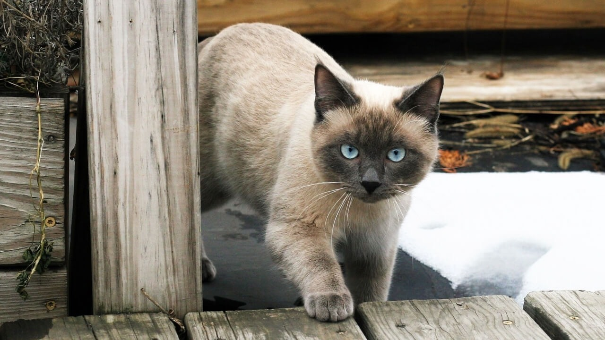

明天要出發去泰國騎車了，距離上次的2017年四國遍路，相隔差不多3年。
偉哉開明新公司的請假規則，讓我把累積了一整年的2019特休加上2020的特休一口氣用完，
從數字上來看，加上農曆年我一口氣放了40天的假。
但農曆年後才出發騎車（那個年節機票的價差實在驚人），實際在泰國的時間是1月30日到2月27日。
這次旅行的裝備沒帶什麼東西，連備用的內胎也沒帶，老天保佑我不要爆胎。
裝備變化如下：
其他能沿用的裝備就繼續沿用，水壺還是那個卡打車運動飲料兩瓶。
為數不多的裝備中，電腦我會帶著，如果有什麼有趣的事情的再分享給大家。
這次是我第一次去泰國，搭AirAsia直飛清邁，在泰國北部/中部，繞行一圈。
行程差不多2~3000公里左右，附帶一題，泰國跟日本一樣都是左駕。
會盡量避開大城市，還有觀光客必做的行程（人妖秀、騎大象）都能免則免。
住宿大多以寺廟為主（希望他們會收留我，拜託），搭配少數的Warmshowers車友家。
比較困擾我的是泰國溫差很大，白天30幾度，夜晚10幾度，這樣白天騎車熱的要命，晚上露營則是冷吱吱。
次之困擾的是蚊蟲不知道會不會很折騰人？鱷魚蚊香我帶了一盒，希望備而不用。
這次旅費我抓的高了一些，一天預算200台幣，基本的日常開銷應該很足夠，聽說泰國物價跟台灣差不多？
但大家的消費心得主要來自曼谷/清邁這些大城市，往外走的話不知道物價會有什麼變化？
我這一趟就單純去騎車閒晃還有吃吃喝喝這樣，無所求，希望一切平安，還有路上能遇到泰國喵喵。
